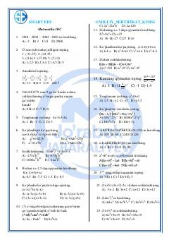

MIMatematika fanidan test topshiriqlari va algebraik masalalar to'plami.
Ushbu qo'llanma matematika fanidan test topshiriqlari va misollarni o'z ichiga olgan o'quv materialidir. Unda algebraik ifodalar, tenglamalar va sonlar nazariyasiga oid turli xil masalalar yechimlari bilan birga taqdim etilgan.